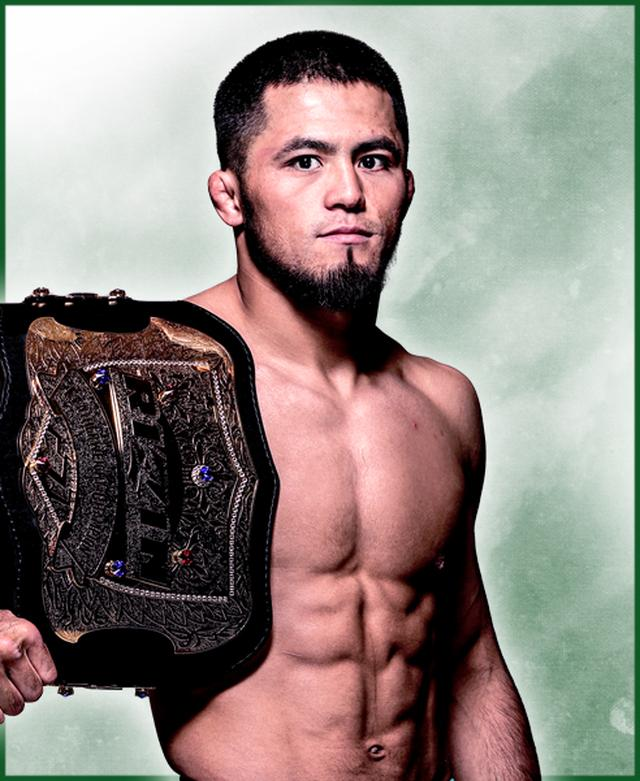
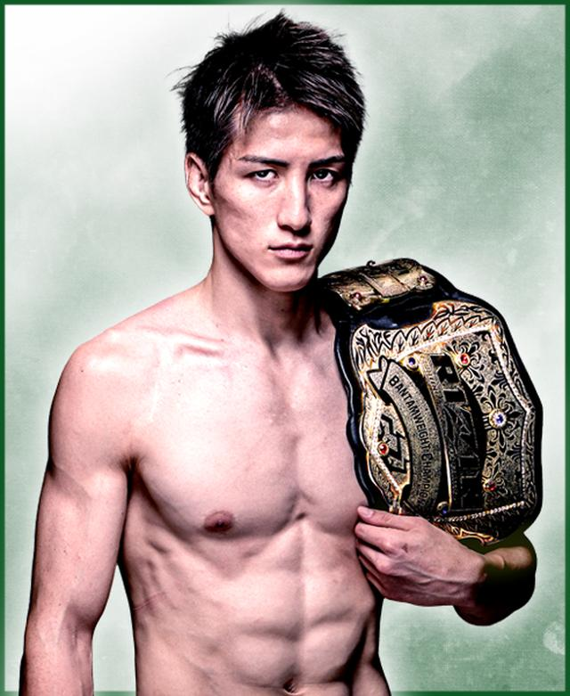
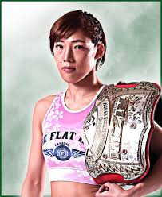
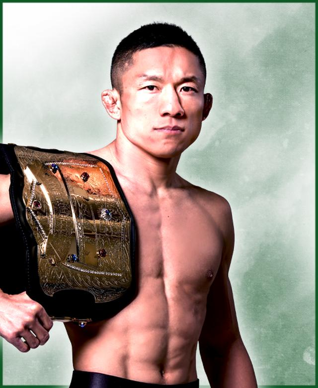
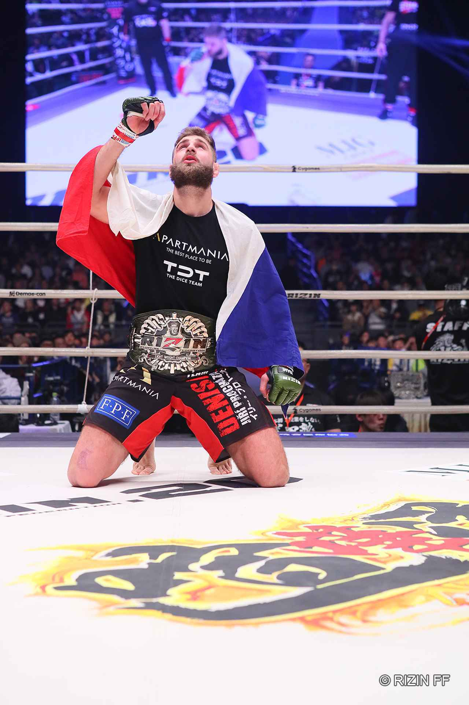

歴代王者
FEATHERWEIGHT

シェイドゥラエフ
Razhabali Shaidulloev
生年月日 ： 2000年10月11日
身長/体重：170cm / 66.0kg
出身 ： キルギス共和国
歴代王者
- 第6代： クレベル・コイケ
- 第5代： 鈴木千裕
- 第4代： ヴガール・ケラモフ
- 第3代： クレベル・コイケ
- 第2代： 牛久絢太郎
- 初 代： 斎藤裕
BANTAMWEIGHT

井上直樹
Naoki Inoue
生年月日 ： 1997年6月14日
身長/体重： 175cm / 61.0kg
出身 ： 日本 愛知県
歴代王者
- 第6代： 朝倉海
- 第5代： フアン・アーチュレッタ
- 第4代： 堀口恭司
- 第3代： 朝倉海
- 第2代： マネル・ケイプ
- 初 代： 堀口恭司
ATOMWEIGHT

伊澤 星花
Seika Izawa
生年月日 ： 1997年11月1日
身長 / 体重：160cm / 49.0kg
出身： 日本 栃木県
歴代王者
- 第2代： 伊澤星花
- 初 代： 浜崎朱加
LIGHTWEIGHT

ホベルト・サトシ・ソウザ
Roberto Satoshi Souza
生年月日 ： 1989年9月19日
身長 / 体重：180cm / 71.0kg
出身 ： ブラジル サンパウロ
歴代王者
- 第2代： ホベルト・サトシ・ソウザ
- 初 代： トフィック・ムサエフ
FLYWEIGHT

堀口恭司
Kyoji Horiguchi
生年月日 ： 1990年10月12日
身長/体重：165cm / 61.0kg
出身 ： 日本 群馬県
LIGHT HEAVYWEIGHT

イリー・プロハースカ
Jiří Procházka
生年月日 ： 1992年10月14日
身長/体重：193cm / 93.0kg
出身 ： チェコ共和国